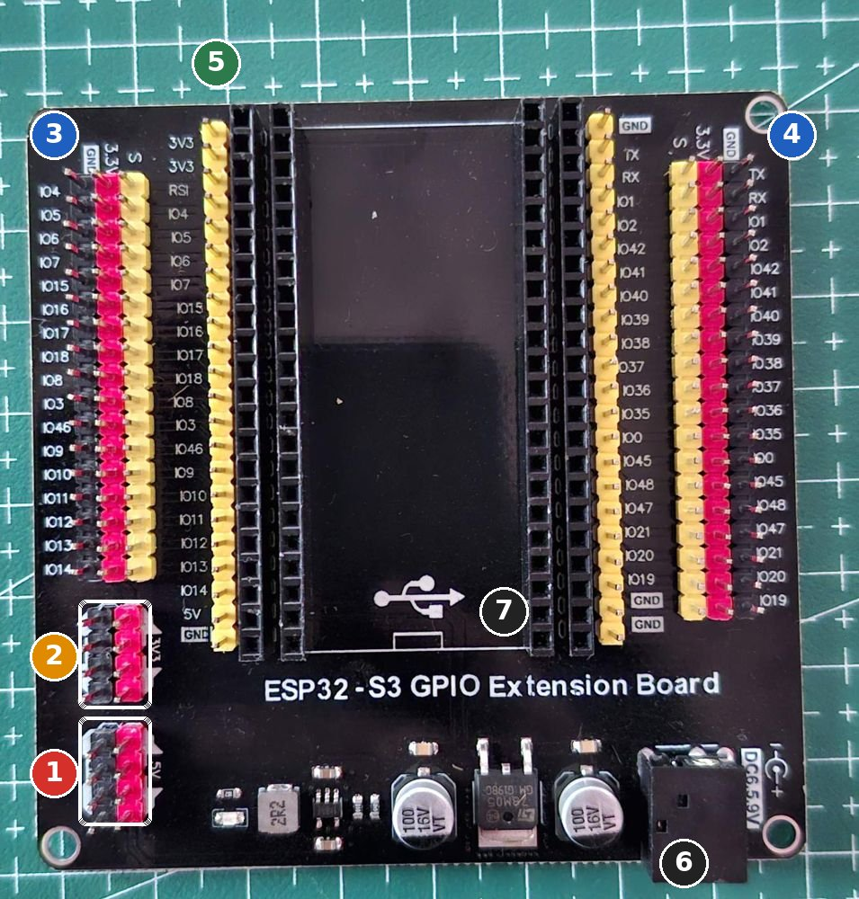
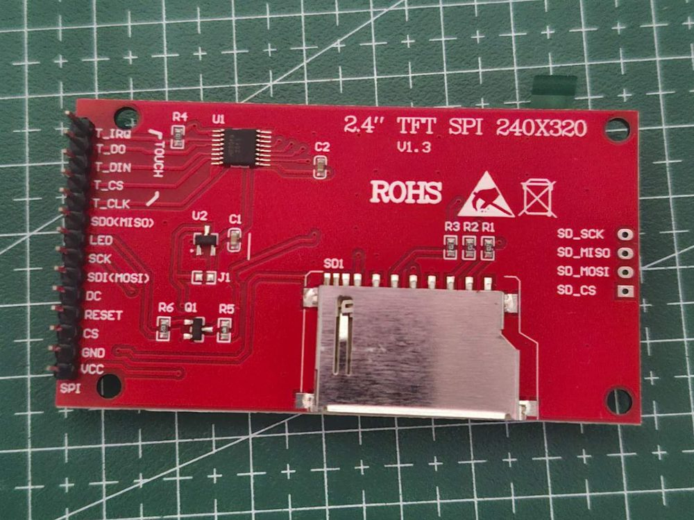
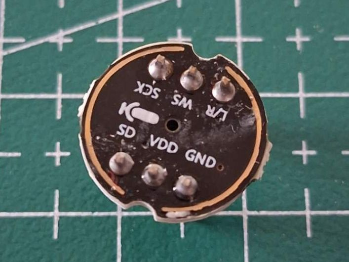

Otak memegang layar sentuh, suara, dan koneksi internet. Setiap modul dites sendiri dulu, lalu otak disambung ke badan.
0 / 0 langkah
Gambaran
Pin otak (ESP32-S3)

1 Blok 5V (merah) dan GND (hitam). Di mode jalan, 5 V dari LM2596 #1 masuk ke sini. Saat USB tercolok, pin 5V papanmu hanya terbaca sekitar 1,5-2,9 V (sudah kamu ukur), jadi jangan memakainya sebagai sumber 5 V di meja.
2 Blok 3V3 dan GND: sumber 3,3 V untuk layar, mikrofon, dan speaker selama di meja.
3 dan 4: tiga kolom untuk tiap GPIO. Kuning = S (sinyal), merah = 3,3 V, hitam = GND. Nama GPIO tercetak di tepi: IO4, IO5, ... IO21.
5 Header kuning lurus di dekat soket: sambungan langsung ke pin S3 apa adanya.
6 Jack DC 6,5-9 V: tidak dipakai. 7 Simbol USB: port USB-C S3 menghadap ke sini saat dipasang.
Bagian
Pin modul
GPIO S3
Bus SPI bersama
SCK / MOSI / MISO
IO12 / IO11 / IO13 lewat breadboard
Layar TFT
CS, DC, RESET
IO10, IO9, IO8
Sentuhan
T_CS
IO14
SD card
SD_CS
IO21
Speaker MAX98357A
BCLK, LRC, DIN
IO4, IO5, IO7
Mikrofon INMP441
SCK, WS, SD
IO15, IO16, IO6
Ke badan
TX, RX
IO17 → D16 DevKit, IO18 ← D17 DevKit
Pin 35-37 (dipakai PSRAM), 19-20 (USB), 0, 3, 45, 46 (pin boot) sengaja tidak dipakai. Hampir semua pin yang dipakai ada di sisi kiri papan.
Langkah
Rakit otak
Semua tahap di bagian ini memakai mode meja: S3 dapat daya dari USB, modul-modul dari blok 3V3.
// TES ESP32-S3: cek PSRAM dan flash. PSRAM harus sekitar 8 MB, flash 16 MB.
void setup() {
Serial.begin(115200);
delay(1500); // beri waktu Serial Monitor tersambung
Serial.println("\n=== TES S3 ===");
}
void loop() {
Serial.printf("Chip: %s rev %d | Flash: %u MB | PSRAM: %u byte (bebas %u)\n",
ESP.getChipModel(), ESP.getChipRevision(), ESP.getFlashChipSize() / 1048576,
ESP.getPsramSize(), ESP.getFreePsram());
delay(2000);
}
Menu Tools
Pilihan
Board
ESP32S3 Dev Module
Flash Size
16MB (128Mb)
PSRAM
OPI PSRAM
Partition Scheme
Huge APP (3MB No OTA/1MB SPIFFS)
USB CDC On Boot
Enabled kalau kabel di port USB bawaan chip (log upload menulis USB mode: USB-Serial/JTAG); Disabled kalau di port UART/COM (log menulis USB mode: UART)
Salah memilih PSRAM adalah penyebab paling umum kode otak gagal nanti.
Berhasil kalau
Muncul Flash: 16 MB dan PSRAM: 8388608 byte (sekitar 8 juta).
Setelah lulus: boleh dipatenkan atau belum?
Boleh dipatenkan Pengaturan Tools Arduino (OPI PSRAM, Huge APP) dan S3 yang tetap menancap di papan ekspansinya: keduanya naik ke lantai 3 sebagai satu unit.
Jangan dulu Papan S3 belum dibaut. Di robot ia memakai spacer nilon 10 mm, port USB-C menghadap ke samping (Bagian 6 Tahap 4).
Kalau tidak berhasil
PSRAM 0: menu PSRAM belum OPI PSRAM.
Upload gagal "Connecting...": tahan tombol BOOT di S3, tekan RST sekali, lepas BOOT, lalu upload lagi.
Upload berhasil tapi Serial Monitor kosong: lihat log upload di tab Output. Kalau tertulis USB mode: USB-Serial/JTAG, kamu memakai port USB bawaan chip: ubah USB CDC On Boot ke Enabled, upload ulang, buka lagi Serial Monitor. Kalau tertulis USB mode: UART, biarkan Disabled. Port yang satunya tidak muncul di komputer: coba kabel data lain, atau pasang driver chip UART-nya.
Depan layar milikmu: 14 pin di kiri, 4 lubang SD di kanan.

Belakang: nama pin dari T_IRQ (atas) sampai VCC (bawah), slot SD ukuran penuh.
Geser gambar ke samping untuk melihat semuanya.
Geser gambar ke samping untuk melihat semuanya.
Pin bertanda ✕ (SDO(MISO) dan T_IRQ) dibiarkan tanpa kabel. Garis merah dan biru breadboard 2 sendiri diberi daya oleh pin 3V3 dan G papan ekspansi S3 (langkah 2).
// TES LAYAR + SENTUHAN (memeriksa dirinya sendiri)
// Library: LovyanGFX. Board: ESP32S3 Dev Module, pengaturan sama dengan tes_s3.
// Buka Serial Monitor (115200) SEBELUM atau tepat setelah upload. Tes berjalan 5 langkah,
// dan setiap langkah memberi tahu kalau ada yang salah serta apa yang harus dicek:
// 1. WARNA : merah, hijau, biru, putih, hitam. Nama warna tertulis di tengah layar.
// 2. ARAH : pilih arah layar lewat Serial Monitor (ketik angka lalu Enter, y kalau cocok).
// 3. KABEL SENTUH: diperiksa otomatis.
// 4. KALIBRASI : tekan 5 tanda +, lalu 1 tanda uji. Kalau meleset, diulang sendiri.
// 5. GAMBAR : coretan harus muncul tepat di bawah stylus.
// Arah dan kalibrasi disimpan di memori S3 (tidak hilang saat dicabut atau upload ulang),
// lalu dipakai otomatis oleh tes_sd dan robot_otak.
#define LGFX_USE_V1
#include <LovyanGFX.hpp>
#include <Preferences.h>
#define TFT_SCK 12
#define TFT_MOSI 11
#define TFT_MISO 13
#define TFT_CS 10
#define TFT_DC 9
#define TFT_RST 8
#define TOUCH_CS 14
#define SD_CS 21
// Modul merah 320 x 240 biasanya memakai chip ILI9342C. Library mengirim pengaturan daya dan gamma
// ILI9341 kalau kita pilih panel ILI9341, dan itu membuat warna pucat. Panel ini mengirim pengaturan ILI9342C.
// ic = true: pengaturan ILI9342C, ic = false: pengaturan ILI9341 asli. Arah layar dan sentuhan tidak berubah.
struct PanelKu : public lgfx::Panel_ILI9341 {
bool ic = true, fh = false, fv = true; // ic: chip ILI9342C; fh/fv: balik layar kiri-kanan / atas-bawah
protected:
const uint8_t* getInitCommands(uint8_t listno) const override {
if (!ic) return lgfx::Panel_ILI9341::getInitCommands(listno);
static constexpr uint8_t list0[] = {
0xC8, 3, 0xFF,0x93,0x42,
0xC0, 2, 0x12,0x12,
0xC1, 1, 0x03,
0xC5, 1, 0xF2,
0xB0, 1, 0xE0,
0xF6, 3, 0x01,0x00,0x00,
0xE0,15, 0x00,0x0C,0x11,0x04,0x11,0x08,0x37,0x89,0x4C,0x06,0x0C,0x0A,0x2E,0x34,0x0F,
0xE1,15, 0x00,0x0B,0x11,0x05,0x13,0x09,0x33,0x67,0x48,0x07,0x0E,0x0B,0x2E,0x33,0x0F,
0xB6, 4, 0x08,0x82,0x1D,0x04,
0x38, 0,
0x29, 0,
0x11, 0 + CMD_INIT_DELAY, 120,
0xFF,0xFF,
};
return listno == 0 ? list0 : nullptr;
}
// Pembalikan arah dan urutan warna diatur di sini, supaya nomor arah (rotasi) dan sentuhan tidak ikut berubah.
void update_madctl(void) override {
if (_bus == nullptr) return;
uint8_t m = getMadCtl(_internal_rotation);
if (fh) m ^= (m & MAD_MV) ? (MAD_MY | MAD_ML) : (MAD_MX | MAD_MH); // balik kiri-kanan layar
if (fv) m ^= (m & MAD_MV) ? (MAD_MX | MAD_MH) : (MAD_MY | MAD_ML); // balik atas-bawah layar
m |= (_cfg.rgb_order == ic) ? MAD_BGR : MAD_RGB; // ILI9342C: urutan warna kebalikan dari ILI9341
startWrite();
write_command(CMD_COLMOD); writeData(getColMod(_write_bits), 1);
write_command(CMD_MADCTL); writeData(m, 1);
_bus->flush();
endWrite();
}
};
class LGFX : public lgfx::LGFX_Device {
PanelKu _panel;
lgfx::Bus_SPI _bus;
lgfx::Touch_XPT2046 _touch;
public:
LGFX() {
{ auto c = _bus.config();
c.spi_host = SPI2_HOST; c.spi_mode = 0; c.freq_write = 27000000; c.freq_read = 16000000;
c.spi_3wire = false; c.use_lock = true; c.dma_channel = SPI_DMA_CH_AUTO;
c.pin_sclk = TFT_SCK; c.pin_mosi = TFT_MOSI; c.pin_miso = TFT_MISO; c.pin_dc = TFT_DC;
_bus.config(c); _panel.setBus(&_bus); }
{ auto c = _panel.config();
c.pin_cs = TFT_CS; c.pin_rst = TFT_RST; c.pin_busy = -1;
c.panel_width = 240; c.panel_height = 320;
c.readable = false; c.invert = false; // readable=false: pin SDO(MISO) layar sengaja TIDAK disambung
c.rgb_order = false; c.dlen_16bit = false;
c.bus_shared = true; // SD card dan sentuhan memakai kabel SPI yang sama
_panel.config(c); }
{ auto c = _touch.config();
c.x_min = 300; c.x_max = 3900; c.y_min = 300; c.y_max = 3900;
c.pin_int = -1; c.bus_shared = true; c.offset_rotation = 0;
c.spi_host = SPI2_HOST; c.freq = 1000000;
c.pin_sclk = TFT_SCK; c.pin_mosi = TFT_MOSI; c.pin_miso = TFT_MISO; c.pin_cs = TOUCH_CS;
_touch.config(c); _panel.setTouch(&_touch); }
setPanel(&_panel);
}
void pakaiLayar(bool ic, bool fh, bool fv) { _panel.ic = ic; _panel.fh = fh; _panel.fv = fv; }
void balikInvert(bool v) { auto c = _panel.config(); c.invert = v; _panel.config(c); }
// Jenis panel. Modul merahmu ternyata panel MENDATAR asli (320 x 240): dengan setelan 240 x 320
// hanya 240 x 240 piksel yang tergambar. lebar320 = true untuk modul seperti itu.
// rgb = urutan warna; modul merahmu butuh true (kalau false, merah dan biru tertukar).
// Berlaku setelah setRotation() berikutnya.
void aturPanel(bool lebar320, bool rgb) {
auto c = _panel.config();
c.panel_width = c.memory_width = lebar320 ? 320 : 240;
c.panel_height = c.memory_height = lebar320 ? 240 : 320;
c.rgb_order = rgb;
_panel.config(c);
}
};
LGFX lcd;
Preferences pref;
uint8_t rotasi = 4; // arah layar, dipilih di langkah 2 (modul merahmu: 4-7 normal, 0-3 tercermin)
uint8_t geo = 1; // jenis panel: 1 = 320 x 240 (modul merahmu), 0 = 240 x 320
uint8_t rgb = 1; // urutan warna: 1 = RGB (modul merahmu), 0 = BGR
float aff[6]; // hasil kalibrasi: angka mentah sentuhan -> titik layar
// ---------------- bantuan ----------------
int ketikan() { // satu huruf dari Serial Monitor, -1 kalau tidak ada
while (Serial.available()) {
int c = Serial.read();
if (c > ' ') return c; // abaikan Enter dan spasi
}
return -1;
}
void pesan(const char* judul, const char* a, const char* b, uint16_t warna) {
int x = lcd.width() / 2, y = lcd.height() / 2;
lcd.fillScreen(TFT_BLACK);
lcd.setTextDatum(middle_center);
lcd.setFont(&fonts::Font4); lcd.setTextColor(warna, TFT_BLACK);
lcd.drawString(judul, x, y - 40);
lcd.setFont(&fonts::Font2); lcd.setTextColor(TFT_WHITE, TFT_BLACK);
lcd.drawString(a, x, y);
lcd.drawString(b, x, y + 22);
}
bool bacaMentah(int32_t &x, int32_t &y) { return lcd.getTouchRaw(&x, &y) > 0; }
bool bacaLayar(int32_t &x, int32_t &y) { return lcd.getTouch(&x, &y) > 0; }
void tungguLepas() { // tunggu layar tidak disentuh selama 0,2 detik
int32_t x, y; unsigned long t = millis();
while (millis() - t < 200) { if (bacaMentah(x, y)) t = millis(); delay(10); }
}
// Tunggu satu tekanan, ambil 15 bacaan selama ditekan, kembalikan nilai tengahnya.
// false = tekanan terlalu singkat atau goyang (diminta menekan lagi).
bool ambilTekan(bool angkaLayar, int32_t &hx, int32_t &hy) {
int32_t xs[15], ys[15], x, y; int n = 0, luput = 0;
while (!(angkaLayar ? bacaLayar(x, y) : bacaMentah(x, y))) delay(5);
delay(60); // biarkan tekanan mantap dulu
unsigned long t0 = millis();
while (n < 15 && millis() - t0 < 2000) {
if (angkaLayar ? bacaLayar(x, y) : bacaMentah(x, y)) { xs[n] = x; ys[n] = y; n++; luput = 0; }
else if (++luput >= 3) break; // stylus diangkat
delay(15);
}
tungguLepas();
if (n < 8) return false;
std::sort(xs, xs + n); std::sort(ys, ys + n);
int32_t batas = angkaLayar ? 6 : 60; // 6 piksel, atau 60 angka mentah
if (xs[n * 3 / 4] - xs[n / 4] > batas || ys[n * 3 / 4] - ys[n / 4] > batas) return false;
hx = xs[n / 2]; hy = ys[n / 2];
return true;
}
void tanda(int x, int y, uint16_t w) { // tanda + yang harus ditekan
lcd.drawCircle(x, y, 12, w);
lcd.drawFastHLine(x - 18, y, 37, w);
lcd.drawFastVLine(x, y - 18, 37, w);
lcd.fillCircle(x, y, 2, TFT_RED);
}
void simpan() {
pref.begin("robot", false);
pref.putUChar("rot", rotasi);
pref.putUChar("geo", geo);
pref.putUChar("rgb", rgb);
pref.putBytes("aff", aff, sizeof(aff));
if (pref.isKey("cal")) pref.remove("cal"); // kalibrasi cara lama, tidak dipakai lagi
pref.end();
Serial.printf("TERSIMPAN di memori S3: arah %d dan kalibrasi sentuh. tes_sd dan robot_otak memakainya.\n", rotasi);
}
// ---------------- langkah 1: warna ----------------
void tesWarna() {
Serial.println("\nLANGKAH 1: WARNA");
Serial.println("Layar harus berwarna sama dengan tulisan di tengahnya.");
struct { uint16_t isi, huruf; const char* nama; } w[] = {
{TFT_RED, TFT_WHITE, "MERAH"}, {TFT_GREEN, TFT_BLACK, "HIJAU"}, {TFT_BLUE, TFT_WHITE, "BIRU"},
{TFT_WHITE, TFT_BLACK, "PUTIH"}, {TFT_BLACK, TFT_WHITE, "HITAM"}};
for (auto &k : w) {
lcd.fillScreen(k.isi);
lcd.setTextDatum(middle_center); lcd.setFont(&fonts::Font4); lcd.setTextColor(k.huruf, k.isi);
lcd.drawString(k.nama, lcd.width() / 2, lcd.height() / 2);
delay(900);
}
Serial.println(" PUTIH tampil hitam dan HITAM tampil putih: ubah c.invert = false menjadi true.");
Serial.println(" MERAH tampil biru dan BIRU tampil merah: tidak apa-apa, betulkan di langkah 2 dengan w.");
}
// ---------------- langkah 2: arah ----------------
void gambarArah() {
lcd.setRotation(rotasi);
int w = lcd.width(), h = lcd.height();
char s[32];
lcd.fillScreen(TFT_BLACK);
lcd.drawRect(0, 0, w, h, TFT_WHITE); // garis tepi 2 piksel
lcd.drawRect(1, 1, w - 2, h - 2, TFT_WHITE);
lcd.setFont(&fonts::Font2); lcd.setTextColor(TFT_YELLOW, TFT_BLACK);
lcd.setTextDatum(top_left); lcd.drawString("KIRI ATAS", 6, 6);
lcd.setTextDatum(top_right); lcd.drawString("KANAN ATAS", w - 7, 6);
lcd.setTextDatum(bottom_left); lcd.drawString("KIRI BAWAH", 6, h - 7);
lcd.setTextDatum(bottom_right); lcd.drawString("KANAN BAWAH", w - 7, h - 7);
lcd.fillTriangle(w / 2, 26, w / 2 - 10, 42, w / 2 + 10, 42, TFT_GREEN); // panah ke atas
struct { uint16_t isi, huruf; const char* nama; } kotak[] = {
{TFT_RED, TFT_WHITE, "MERAH"}, {TFT_GREEN, TFT_BLACK, "HIJAU"}, {TFT_BLUE, TFT_WHITE, "BIRU"}};
for (int i = 0; i < 3; i++) { // contoh warna
int x = w / 2 - 96 + i * 64;
lcd.fillRect(x, 50, 60, 22, kotak[i].isi);
lcd.setTextDatum(middle_center); lcd.setTextColor(kotak[i].huruf, kotak[i].isi);
lcd.drawString(kotak[i].nama, x + 30, 61);
}
lcd.setTextDatum(middle_center);
lcd.setFont(&fonts::Font4); lcd.setTextColor(TFT_WHITE, TFT_BLACK);
snprintf(s, sizeof(s), "ARAH %d", rotasi); lcd.drawString(s, w / 2, h / 2 - 28);
snprintf(s, sizeof(s), "%d x %d", w, h); lcd.drawString(s, w / 2, h / 2 + 2);
lcd.setFont(&fonts::Font2); lcd.setTextColor(TFT_CYAN, TFT_BLACK);
lcd.drawString(w > h ? "mendatar" : "tegak (bukan untuk robot)", w / 2, h / 2 + 28);
lcd.drawString(geo ? "panel 320 x 240" : "panel 240 x 320", w / 2, h / 2 + 48);
lcd.drawString("Pilih di Serial Monitor", w / 2, h / 2 + 68);
Serial.printf(" Sekarang ARAH %d (%d x %d, %s), panel %s, warna %s\n", rotasi, w, h, w > h ? "mendatar" : "tegak",
geo ? "320 x 240" : "240 x 320", rgb ? "RGB" : "BGR");
}
void petunjukArah() {
Serial.println("\nLANGKAH 2: ARAH LAYAR");
Serial.println("Pegang layar MENDATAR, seperti nanti dilihat di robot. Arah yang benar:");
Serial.println(" a. tulisan terbaca biasa, bukan seperti bayangan di cermin,");
Serial.println(" b. garis putih utuh di keempat tepi layar,");
Serial.println(" c. KIRI ATAS ada di pojok kiri atas, panah hijau menunjuk ke atas,");
Serial.println(" d. kotak MERAH berwarna merah dan kotak BIRU berwarna biru.");
Serial.println("Ketik angka 0 sampai 7 lalu Enter untuk mencoba arah lain.");
Serial.println("Kalau merah dan biru tertukar, ketik w lalu Enter.");
Serial.println("Kalau di SEMUA angka garis tepinya tidak utuh (sebagian layar tidak terhapus),");
Serial.println("ketik g lalu Enter untuk ganti jenis panel, lalu coba lagi angkanya.");
Serial.println("Kalau sudah benar, ketik y lalu Enter.");
}
void pilihArah() {
petunjukArah();
gambarArah();
while (true) {
int c = ketikan();
if (c >= '0' && c <= '7') { rotasi = c - '0'; gambarArah(); }
else if (c == 'g' || c == 'G') { geo ^= 1; lcd.aturPanel(geo, rgb); gambarArah(); }
else if (c == 'w' || c == 'W') { rgb ^= 1; lcd.aturPanel(geo, rgb); gambarArah(); }
else if (c == 'y' || c == 'Y') {
if (lcd.width() > lcd.height()) break;
Serial.println(" Arah ini tegak. Robot memakai layar mendatar: pilih angka yang menulis mendatar.");
}
else if (c != -1) petunjukArah();
delay(20);
}
Serial.printf(" Arah %d dipilih, panel %s.\n", rotasi, geo ? "320 x 240" : "240 x 320");
}
// ---------------- langkah 3: kabel sentuh ----------------
void cekKabelSentuh() {
int32_t x, y;
Serial.println("\nLANGKAH 3: KABEL SENTUH");
while (true) {
pesan("CEK SENTUH", "Jangan sentuh layar dulu...", "", TFT_WHITE);
int kena = 0;
for (int i = 0; i < 100; i++) { if (bacaMentah(x, y)) kena++; delay(20); }
if (kena <= 5) break;
Serial.printf(" GAGAL: layar terbaca disentuh %d dari 100 kali, padahal tidak disentuh.\n", kena);
Serial.println(" Pastikan tidak ada yang menekan layar (jari, jepitan, plastik pelindung terlipat),");
Serial.println(" lalu cek kabel T_DO ke c8 dan T_CS ke IO14. Diulang otomatis.");
pesan("GAGAL", "Layar terbaca disentuh sendiri", "Lihat Serial Monitor. Diulang...", TFT_RED);
delay(3000);
}
pesan("CEK SENTUH", "Tekan dan tahan tengah layar", "pakai stylus atau ujung kuku", TFT_WHITE);
unsigned long t0 = millis();
while (!bacaMentah(x, y)) {
delay(10);
if (millis() - t0 > 15000) {
t0 = millis();
Serial.println(" Belum ada sentuhan terbaca. Kalau sudah ditekan tapi tetap begini, cek kabel:");
Serial.println(" T_CLK ke c2, T_DIN ke c5, T_DO ke c8, T_CS ke IO14, dan VCC/GND layar.");
lcd.setTextColor(TFT_YELLOW, TFT_BLACK);
lcd.drawString("Belum terbaca: lihat Serial Monitor", lcd.width() / 2, lcd.height() / 2 + 50);
}
}
Serial.printf(" OK: sentuhan terbaca (angka mentah x=%d y=%d).\n", (int)x, (int)y);
tungguLepas();
}
// ---------------- langkah 4: kalibrasi ----------------
// Titik layar pada arah sekarang -> titik layar pada arah 0.
// Kalibrasi disimpan untuk arah 0 (sama seperti LovyanGFX), jadi tetap benar walau arah diganti.
void keArah0(float &x, float &y) {
uint8_t r = lcd.getRotation();
float w = lcd.width(), h = lcd.height();
if ((1 << r) & 0b10010110) y = (h - 1) - y; // arah 1, 2, 4, 7 dibalik atas-bawah
if (r & 2) x = (w - 1) - x;
if (r & 1) std::swap(x, y);
}
// Cari a[6] supaya (a0*mx + a1*my + a2, a3*mx + a4*my + a5) sedekat mungkin dengan (tx, ty).
bool hitungKalibrasi(const float *mx, const float *my, const float *tx, const float *ty, int n, float *a) {
double rx = 0, ry = 0, ax = 0, ay = 0;
for (int i = 0; i < n; i++) { rx += mx[i]; ry += my[i]; ax += tx[i]; ay += ty[i]; }
rx /= n; ry /= n; ax /= n; ay /= n;
double uu = 0, uv = 0, vv = 0, ux = 0, vx = 0, uy = 0, vy = 0;
for (int i = 0; i < n; i++) {
double u = mx[i] - rx, v = my[i] - ry, X = tx[i] - ax, Y = ty[i] - ay;
uu += u * u; uv += u * v; vv += v * v; ux += u * X; vx += v * X; uy += u * Y; vy += v * Y;
}
double det = uu * vv - uv * uv;
if (uu <= 0 || vv <= 0 || det < 0.01 * uu * vv) return false; // titik-titiknya segaris
a[0] = (ux * vv - vx * uv) / det; a[1] = (vx * uu - ux * uv) / det; a[2] = ax - a[0] * rx - a[1] * ry;
a[3] = (uy * vv - vy * uv) / det; a[4] = (vy * uu - uy * uv) / det; a[5] = ay - a[3] * rx - a[4] * ry;
return true;
}
void gagalKalibrasi(const char* a, const char* b) {
Serial.printf(" ULANGI KALIBRASI: %s. %s\n", a, b);
pesan("ULANGI", a, b, TFT_RED);
delay(3500);
}
void kalibrasi() {
int w = lcd.width(), h = lcd.height(), m = 25;
const int px[5] = {m, w - 1 - m, w - 1 - m, m, w / 2};
const int py[5] = {m, m, h - 1 - m, h - 1 - m, h / 2};
float mx[5], my[5], tx[5], ty[5];
int32_t x, y;
char s[48];
Serial.println("\nLANGKAH 4: KALIBRASI SENTUH");
Serial.println("Tekan TEPAT di tengah tiap tanda + dengan stylus, tahan 1 detik, lalu angkat.");
while (true) {
for (int i = 0; i < 5; i++) {
while (true) {
lcd.fillScreen(TFT_BLACK);
lcd.setTextDatum(middle_center); lcd.setFont(&fonts::Font2); lcd.setTextColor(TFT_WHITE, TFT_BLACK);
snprintf(s, sizeof(s), "KALIBRASI titik %d dari 5", i + 1);
lcd.drawString(s, w / 2, h / 2 - 50);
lcd.drawString("Tekan tepat di tengah tanda +", w / 2, h / 2 + 40);
lcd.drawString("tahan 1 detik, lalu angkat", w / 2, h / 2 + 60);
tanda(px[i], py[i], TFT_WHITE);
if (ambilTekan(false, x, y)) break;
Serial.println(" Tekanan terlalu singkat atau goyang. Tekan lagi lebih mantap, jangan digeser.");
pesan("TEKAN LAGI", "Tahan 1 detik, jangan digeser", "", TFT_YELLOW);
delay(1200);
}
tanda(px[i], py[i], TFT_GREEN); delay(250);
mx[i] = x; my[i] = y;
float a = px[i], b = py[i]; keArah0(a, b); tx[i] = a; ty[i] = b;
Serial.printf(" titik %d: mentah x=%d y=%d\n", i + 1, (int)x, (int)y);
}
// Cek 1: kelima tekanan harus tersebar, bukan di satu tempat
float x0 = mx[0], x1 = mx[0], y0 = my[0], y1 = my[0];
for (int i = 1; i < 5; i++) { x0 = min(x0, mx[i]); x1 = max(x1, mx[i]); y0 = min(y0, my[i]); y1 = max(y1, my[i]); }
if (x1 - x0 < 800 || y1 - y0 < 800) { gagalKalibrasi("Tekanan terbaca di tempat sama", "Cek kabel T_DIN (c5) dan T_DO (c8)"); continue; }
if (!hitungKalibrasi(mx, my, tx, ty, 5, aff)) { gagalKalibrasi("Titik-titiknya segaris", "Tekan tanda yang ditunjuk saja"); continue; }
// Cek 2: setiap titik harus pas dengan hitungan (sisa meleset kecil)
float terburuk = 0; int iBuruk = 0;
for (int i = 0; i < 5; i++) {
float ex = aff[0] * mx[i] + aff[1] * my[i] + aff[2] - tx[i];
float ey = aff[3] * mx[i] + aff[4] * my[i] + aff[5] - ty[i];
float e = sqrtf(ex * ex + ey * ey);
if (e > terburuk) { terburuk = e; iBuruk = i; }
}
Serial.printf(" meleset terbesar %.1f piksel (titik %d)\n", terburuk, iBuruk + 1);
if (terburuk > 12) {
snprintf(s, sizeof(s), "Titik %d meleset %d piksel", iBuruk + 1, (int)terburuk);
gagalKalibrasi(s, "Tekan tepat di tengah tanda +");
continue;
}
lcd.panel()->setCalibrateAffine(aff);
// Cek 3: titik uji, dibaca dengan cara yang sama seperti robot membaca sentuhan
int qx = w * 3 / 4, qy = h / 3;
while (true) {
lcd.fillScreen(TFT_BLACK);
lcd.setTextDatum(middle_center); lcd.setFont(&fonts::Font2); lcd.setTextColor(TFT_WHITE, TFT_BLACK);
lcd.drawString("UJI: tekan tanda + ini", w / 2, h * 2 / 3);
tanda(qx, qy, TFT_CYAN);
if (ambilTekan(true, x, y)) break;
pesan("TEKAN LAGI", "Tahan 1 detik, jangan digeser", "", TFT_YELLOW);
delay(1200);
}
float e = sqrtf((float)(x - qx) * (x - qx) + (float)(y - qy) * (y - qy));
Serial.printf(" titik uji terbaca x=%d y=%d, seharusnya x=%d y=%d, meleset %.1f piksel\n", (int)x, (int)y, qx, qy, e);
if (e > 15) {
snprintf(s, sizeof(s), "Titik uji meleset %d piksel", (int)e);
gagalKalibrasi(s, "Kalibrasi diulang dari titik 1");
continue;
}
Serial.println(" LULUS: kalibrasi tepat.");
simpan();
pesan("KALIBRASI LULUS", "Sentuhan sudah tepat", "", TFT_GREEN);
delay(1500);
return;
}
}
// ---------------- langkah 5: gambar ----------------
const int TOMBOL_W = 70, TOMBOL_H = 28; // tombol HAPUS di kanan atas
void layarGambar() {
int w = lcd.width(), h = lcd.height();
lcd.fillScreen(TFT_BLACK);
lcd.setFont(&fonts::Font2); lcd.setTextColor(TFT_WHITE, TFT_BLACK);
lcd.setTextDatum(top_left); lcd.drawString("Coret, atau ketuk lingkaran", 4, 6);
lcd.fillRoundRect(w - TOMBOL_W, 0, TOMBOL_W, TOMBOL_H, 4, TFT_DARKGREY);
lcd.setTextDatum(middle_center); lcd.setTextColor(TFT_WHITE, TFT_DARKGREY);
lcd.drawString("HAPUS", w - TOMBOL_W / 2, TOMBOL_H / 2);
const int cx[5] = {25, w - 26, w - 26, 25, w / 2}, cy[5] = {55, 55, h - 26, h - 26, h / 2};
for (int i = 0; i < 5; i++) lcd.drawCircle(cx[i], cy[i], 8, TFT_DARKGREY);
}
// Baca pilihan layar tersimpan: jenis chip, balik layar kiri-kanan / atas-bawah, dan warna negatif (invert).
// Bawaan untuk modul merahmu (ILI9342C): layar dibalik atas-bawah dan invert aktif. Ubah lewat tombol Serial di tes_media.
void muatLayar() {
Preferences p; p.begin("robot", true);
bool ic = p.getUChar("ic", 1) != 0;
lcd.pakaiLayar(ic, p.getUChar("fh", 0) != 0, p.getUChar("fv", ic ? 1 : 0) != 0);
lcd.balikInvert(p.getUChar("inv", ic ? 1 : 0) != 0);
p.end();
}
void setup() {
Serial.begin(115200);
delay(1500); // beri waktu Serial Monitor tersambung
Serial.println("\n=== TES LAYAR + SENTUHAN ===");
pref.begin("robot", false);
geo = pref.getUChar("geo", 1); // tersimpan dari tes sebelumnya; awalnya setelan modul merahmu
rgb = pref.getUChar("rgb", 1);
rotasi = pref.getUChar("rot", 4);
pref.end();
if (geo > 1) geo = 1;
if (rgb > 1) rgb = 1;
if (rotasi > 7) rotasi = 4;
lcd.aturPanel(geo, rgb);
muatLayar();
lcd.init();
lcd.setBrightness(255);
lcd.setRotation(rotasi);
tesWarna();
pilihArah();
cekKabelSentuh();
kalibrasi();
Serial.println("\nLANGKAH 5: GAMBAR");
Serial.println("Coret layar: garis kuning harus muncul tepat di bawah stylus.");
Serial.println("Ketuk 5 lingkaran abu-abu: titik kuning harus jatuh di dalamnya.");
Serial.println("Ketik k = kalibrasi ulang, a = ganti arah (kalibrasi tidak perlu diulang kecuali jenis panel diganti).");
layarGambar();
}
void loop() {
int c = ketikan();
if (c == 'k') { kalibrasi(); layarGambar(); }
if (c == 'a') {
uint8_t g0 = geo;
pilihArah();
if (geo != g0) kalibrasi(); else simpan(); // jenis panel berubah = kalibrasi harus diulang
layarGambar();
}
static bool lalu = false;
static int32_t lx, ly;
static unsigned long tLalu = 0, tCetak = 0;
int32_t x1, y1, x2, y2;
bool ada = bacaLayar(x1, y1);
if (ada) { delay(4); ada = bacaLayar(x2, y2) && abs(x1 - x2) < 10 && abs(y1 - y2) < 10; } // dua bacaan harus sepakat
if (ada) {
int32_t x = (x1 + x2) / 2, y = (y1 + y2) / 2;
if (!lalu && x >= lcd.width() - TOMBOL_W && y < TOMBOL_H) { layarGambar(); tungguLepas(); return; }
if (lalu && abs(x - lx) < 40 && abs(y - ly) < 40) lcd.drawWideLine(lx, ly, x, y, 2.5f, TFT_YELLOW);
else lcd.fillCircle(x, y, 3, TFT_YELLOW);
lx = x; ly = y; tLalu = millis(); lalu = true;
if (millis() - tCetak > 150) { tCetak = millis(); Serial.printf("sentuh x=%d y=%d\n", (int)x, (int)y); }
} else if (millis() - tLalu > 60) lalu = false;
delay(5);
}
Kenapa begitu? Layar, sentuhan, dan SD memakai tiga kabel yang sama (SCK, MOSI, MISO). ESP32 memilih siapa yang diajak bicara dengan menurunkan pin CS milik perangkat itu. Itulah kenapa tiap perangkat punya kabel CS sendiri.
Berhasil kalau
Serial Monitor menulis LULUS: kalibrasi tepat. dan TERSIMPAN. Coretan kuning muncul tepat di bawah stylus, dan titik yang diketuk jatuh di dalam kelima lingkaran.
Setelah lulus: boleh dipatenkan atau belum?
Boleh dipatenkan Susunan kabel di breadboard 2 (bus SPI kolom 2, 5, 8 dan pin layar). Breadboard ini ikut naik ke lantai 3 bersama kabelnya.
Jangan dulu Layar belum dibaut. Di robot ia rebah menghadap atas dengan spacer 20 mm, dan kabel yang menuju pinnya ada di bawah layar, jadi harus sudah menancap sebelum layar dibaut.
Kalau tidak berhasil
Layar putih saja: RESET, DC, atau CS belum tersambung, atau SCK/MOSI tertukar.
Warna terbalik (hitam jadi putih): di kode, ubah c.invert = false menjadi true. Merah dan biru tertukar: ketik w di langkah 2.
Gambar bergeser atau bergaris: kabel SPI terlalu panjang. Pakai kabel 10-20 cm, atau turunkan freq_write ke 20000000.
Tulisan seperti di cermin: di langkah 2 coba angka lain dari 0 sampai 7. Hanya sebagian layar yang tergambar (warna penuh cuma menutup sekitar ¾ layar, tulisan terpotong): jenis panel salah, ketik g di langkah 2.
Coretan muncul di tempat lain atau miring: ketik k lalu Enter untuk kalibrasi ulang, dan tekan tepat di titik tengah tanda +, bukan di ujung garisnya.
Sentuhan tidak merespons: tes langkah 3 menunjukkan kabel yang dicek. Biasanya T_CS ke IO14 atau T_DO ke kolom 8.
Tahap 3
SD card di belakang layar
Kartu SD ukuran penuh (SanDisk 32 GB-mu)Pin header 4 pin + solderKabel F-M
// TES SPEAKER: bunyi nada naik-turun lewat MAX98357A. Tanpa library tambahan.
#include <ESP_I2S.h>
#define AMP_BCLK 4
#define AMP_LRC 5
#define AMP_DIN 7
I2SClass amp;
const int RATE = 16000;
void nada(float hz, int ms, float keras = 0.25) {
int16_t buf[256];
int total = RATE * ms / 1000;
static float fase = 0;
for (int n = 0; n < total; n += 128) {
for (int i = 0; i < 128; i++) {
int16_t v = (int16_t)(sin(fase) * 32767 * keras);
fase += 2 * PI * hz / RATE; if (fase > 2 * PI) fase -= 2 * PI;
buf[i * 2] = v; buf[i * 2 + 1] = v; // kiri dan kanan sama
}
amp.write((uint8_t*)buf, sizeof(buf));
}
}
bool ampOk = false;
void setup() {
Serial.begin(115200);
delay(1500); // beri waktu Serial Monitor tersambung
Serial.println("\n=== TES SPEAKER ===");
amp.setPins(AMP_BCLK, AMP_LRC, AMP_DIN);
ampOk = amp.begin(I2S_MODE_STD, RATE, I2S_DATA_BIT_WIDTH_16BIT, I2S_SLOT_MODE_STEREO);
}
void loop() {
if (!ampOk) { Serial.println("I2S gagal mulai. Cek pin BCLK, LRC, DIN."); delay(2000); return; }
Serial.println("do re mi fa sol");
float not_[] = {523, 587, 659, 698, 784};
for (float f : not_) nada(f, 300);
nada(0, 1000, 0); // diam 1 detik
}
Kenapa begitu? MAX98357A menerima suara digital (I2S) dan langsung menguatkannya ke speaker. Pin GAIN kosong = penguatan 9 dB, pin SD kosong = menyala. Di robot jadi, Vin dipindah ke 5 V supaya lebih keras.
Berhasil kalau
Terdengar do-re-mi-fa-sol lalu diam sedetik, berulang.
Setelah lulus: boleh dipatenkan atau belum?
Boleh dipatenkan Kabel speaker yang sudah terjepit di terminal ⊕ dan ⊖.
Jangan dulu Vin MAX98357A masih di rel 3,3 V. Di robot ia dipindah ke pin 5V papan S3 (Bagian 6 Tahap 6). Speaker belum diikat ke plat (Bagian 6 Tahap 4).
Kalau tidak berhasil
Diam: cek BCLK/LRC/DIN tidak tertukar dan kabel speaker terjepit kuat di terminal (bukan isolasinya yang terjepit).
Bunyi kresek: kabel GND kurang kuat, atau kabel data terlalu panjang.
Tahap 5
Mikrofon INMP441
INMP441Pin header + solderKabel F-M dan F-F

INMP441 milikmu: SCK, WS, L/R di satu sisi, SD, VDD, GND di sisi lain.
// TES MIKROFON: tampilkan kerasnya suara. Buka Tools > Serial Plotter, lalu tepuk tangan.
#include <ESP_I2S.h>
#define MIC_SCK 15
#define MIC_WS 16
#define MIC_SD 6
I2SClass mic;
bool micOk = false;
void setup() {
Serial.begin(115200);
delay(1500); // beri waktu Serial Monitor tersambung
Serial.println("\n=== TES MIC ===");
mic.setPins(MIC_SCK, MIC_WS, -1, MIC_SD);
micOk = mic.begin(I2S_MODE_STD, 16000, I2S_DATA_BIT_WIDTH_32BIT, I2S_SLOT_MODE_MONO, I2S_STD_SLOT_LEFT);
}
void loop() {
if (!micOk) { Serial.println("Mikrofon gagal mulai. Cek pin SCK, WS, SD."); delay(2000); return; }
int32_t buf[512];
size_t n = mic.readBytes((char*)buf, sizeof(buf)) / 4;
if (n == 0) { Serial.println("tidak ada data dari mikrofon"); delay(500); return; }
double jumlah = 0;
for (size_t i = 0; i < n; i++) { double v = buf[i] >> 14; jumlah += v * v; }
int keras = sqrt(jumlah / n);
Serial.printf("keras:%d\n", keras); // diam: puluhan sampai ratusan, tepuk: ribuan
}
Kenapa begitu? L/R ke GND membuat mikrofon mengirim suara di jalur kiri. Kode membaca jalur kiri saja. Mikrofon dan speaker memakai dua jalur I2S terpisah, jadi bisa diatur sendiri-sendiri.
Berhasil kalau
Garis di Serial Plotter rendah saat diam (puluhan sampai ratusan) dan melonjak ke ribuan saat kamu tepuk tangan atau bicara.
Setelah lulus: boleh dipatenkan atau belum?
Boleh dipatenkan Solderan pin header INMP441, dengan lubang suara tidak tertutup.
Jangan dulu VDD tetap ke 3,3 V. Jangan ikut dipindah ke 5 V saat mode jalan seperti Vin speaker: INMP441 tidak boleh 5 V.
Kalau tidak berhasil
Selalu 0: SD dan WS tertukar, atau L/R tidak ke GND.
// TES SAMBUNGAN OTAK-BADAN (upload ke ESP32-S3; badan sudah berisi robot_badan.ino)
// Ketik perintah di Serial Monitor S3, misalnya PING atau M 150 150 800, lalu Enter.
#define BADAN_TX 17
#define BADAN_RX 18
void setup() {
Serial.begin(115200);
delay(1500); // beri waktu Serial Monitor tersambung
Serial.println("\n=== TES UART ===");
Serial1.begin(115200, SERIAL_8N1, BADAN_RX, BADAN_TX);
}
void loop() {
static bool dijawab = false;
static uint32_t tPing = 0;
if (!dijawab && millis() - tPing > 3000) { // ulangi PING sampai badan menjawab
tPing = millis();
Serial.println("Mengirim PING ke badan... (belum ada jawaban: cek TX/RX disilang dan GND bersama)");
Serial1.println("PING");
}
while (Serial.available()) Serial1.write(Serial.read()); // dari laptop ke badan
static String baris;
while (Serial1.available()) { // dari badan ke laptop
char c = Serial1.read();
if (c == '\n') {
dijawab = true;
if (!baris.startsWith("D ") || millis() % 2000 < 260) Serial.println("badan: " + baris); // data D dicetak jarang
baris = "";
} else if (c != '\r') baris += c;
}
}
Berhasil kalau
Muncul badan: PONG dan baris data badan: D .... Perintah M menggerakkan roda.
Setelah lulus: boleh dipatenkan atau belum?
Boleh dipatenkan Pasangan UART: IO17 ke D16, IO18 ke D17, G ke G. Di robot sama persis, hanya kabelnya lebih panjang.
Jangan dulu Kabel jumper 20 cm di meja belum final: di robot kabel UART lebih panjang dan disambung F-F dengan M-F (Bagian 6 Tahap 4).
Kalau tidak berhasil
Tidak ada balasan: TX-RX tidak disilang, GND belum disambung, atau badan belum berisi robot_badan.ino.
Huruf aneh: kedua board harus 115200 (sudah di kode).